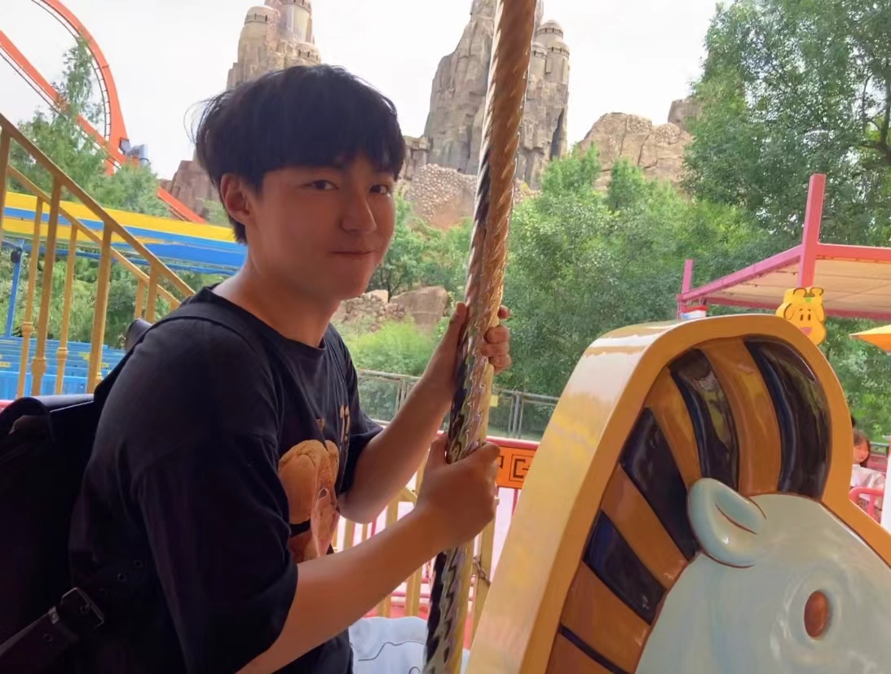
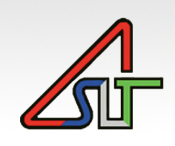
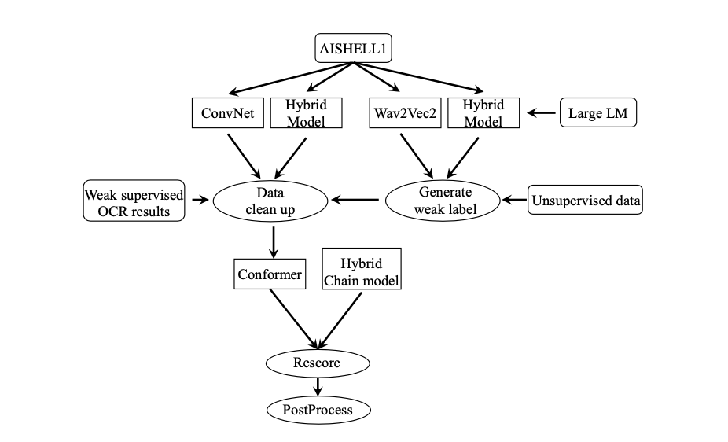
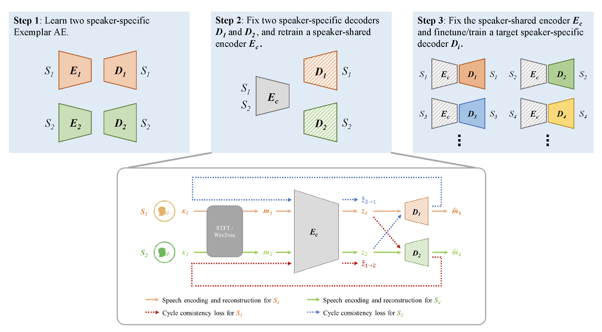

Weida Liang
|
I am a first-year Ph.D. student advised by Prof. Xiaokui Xiao at the School of Computing (SoC), National University of Singapore (NUS). Previously, I graduated from Tsinghua University with a B.S. degree in Electronic Engineering. I’ve had the fortune to work with Prof. Dongmei Li at Tsinghua University. Afterwards, I joined Center for Speech and Language Technologies (CSLT) as a research intern with Dr. Lantian Li and Prof. Dong Wang. Then I became an intern in ASR Oteam, Tencent Inc. in Beijing and did research in ASR and Multimodal Learning, organizing ICPR MSR 2022 with Dr. Jian Kang, etc. My primary interests lie in various aspects of machine learning (ML), particularly in deep learning as well as its application in differential privacy, etc. My previous interest also focuses on audio processing. Email: lwd17[at]tsinghua.org.com |
 |
{kind=link}
{kind=link}
Research Experience
|
National University of Singapore
2022.8(expected) - Ph.D. Student in Computer Science Advisor: Prof. Xiaokui Xiao |
|
|
Tencent
2022.3 - Present Research Intern Advisor: Dr. Jian Kang |
|
|  |
Center for Speech and Language Technologies
2021.8 - 2022.4 Research Intern Advisor: Prof. Dong Wang |
 |
Tsinghua University
2017.8 - 2021.6 B.S. in Electronic Engineering Advisor: Prof. Dongmei Li |
Papers
|  |
ICPR 2022 Challenge on Multi-Modal Subtitle Recognition. ICPR 2022 accepted
Shan Huang, SHEN HUANG, Li Lu, PENGFEI HU, Lijuan Wang, Xiang Wang*, Jian Kang, Weida Liang, Lianwen Jin, Yuliang Liu, Yaqiang Wu
|
|  |
Enhanced exemplar autoencoder with cycle consistency loss in any-to-one voice conversion. Interspeech 2022 submitted
Weida Liang,
Lantian Li,
Dong Wang,
Wenqiang Du
|
Patent
A cycle loss based voice conversion device, 2022Honors & Awards
Meritorious Winner in Mathematical Contest in Modeling, 2019Bronze Medal in Chinese Mathematical Olympiad, 2017